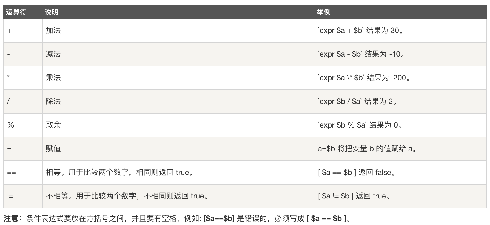
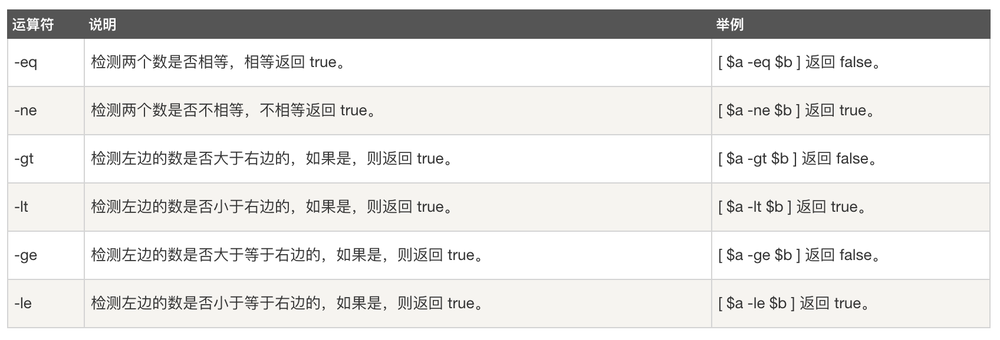
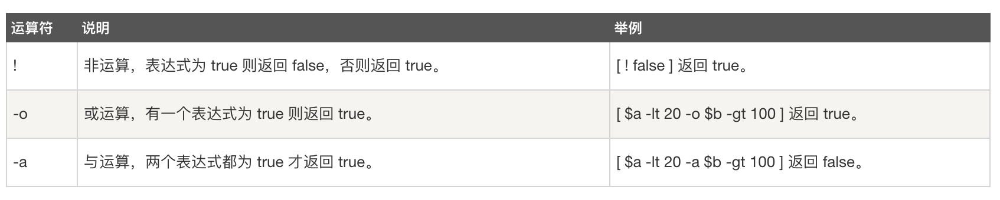
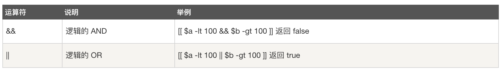
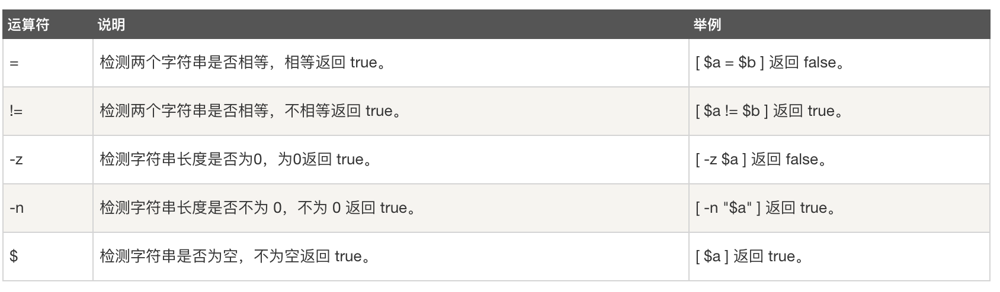
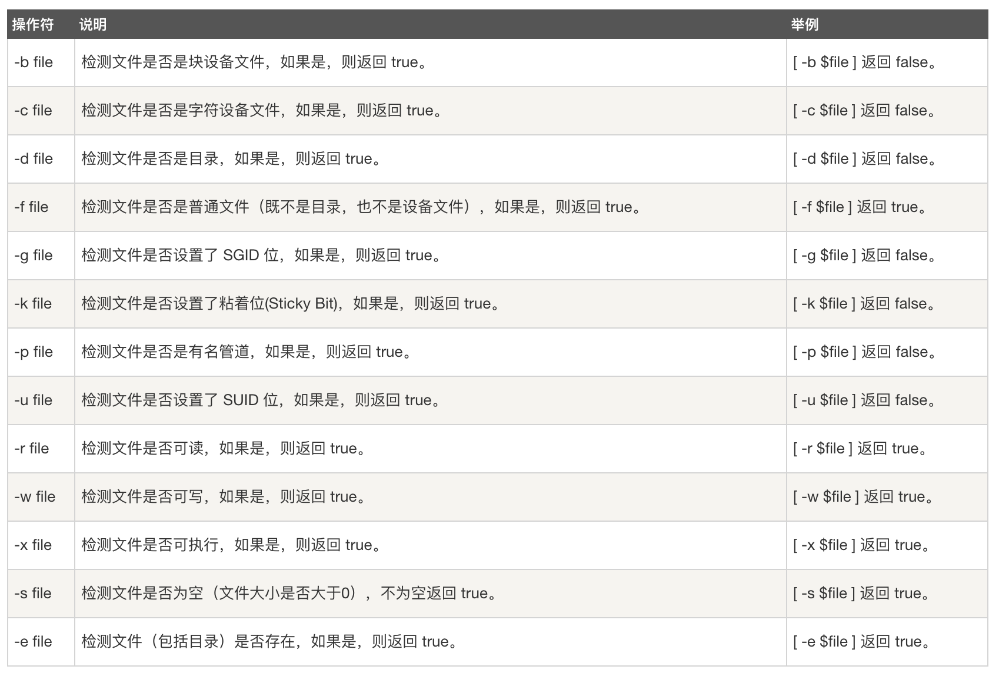
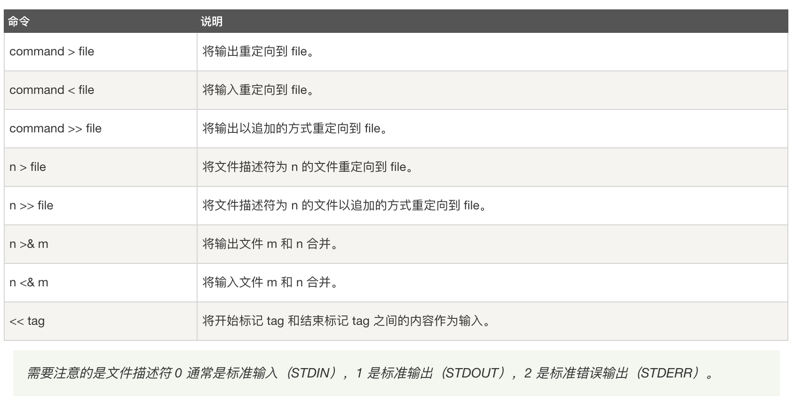
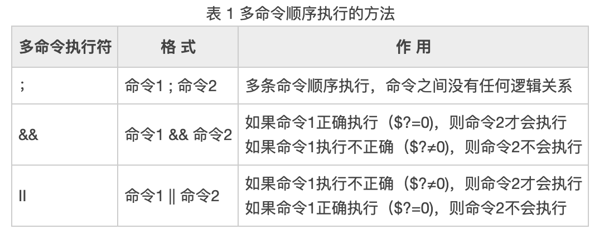
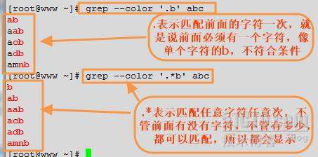

Shell脚本是计算机运行中必不可少的一种脚本语言。应用shell 能够和计算机内核进行交互，同时也能自动化运行所需要运行的程序，还可以快速的进行一些文件的查询功能。因此熟练掌握shell是作为程序员不可缺少的一部分技能。本文整理了一些普通日常中常用的shell 命令。同时也区分了一些容易混淆的shell相关的概念。
Linux各种系统和Unix
UNIX是一个功能强大、性能全面的多用户、多任务操作系统，可以应用从巨型计算机到普通PC机等多种不同的平台上，是应用面最广、影响力最大的操作系统。Linux是一种外观和性能与UNIX相同或更好的操作系统，但，Linux不源于任何版本的UNIX的源代码，并不是UNIX，而是一个类似于UNIX的产品。
Unix是大型机系统，内核是保密的。而Linux是微型机系统，内核是公开的。
Shell介绍
Windows、Mac OS、Android 等操作系统都由一家公司开发，所有的核心软件和基础库都由一家公司做决定，容易形成统一的标准，一般不会开发多款功能类似的软件。而 Linux不一样，它是“万国牌”，由多个组织机构开发，不同的组织机构为了发展自己的 Linux 分支可能会开发出功能类似的软件，它们各有优缺点，用户可以自由选择。Shell 就是这样的一款软件，不同的组织机构开发了不同的 Shell，它们各有所长，有的占用资源少，有的支持高级编程功能，有的兼容性好，有的重视用户体验。
Linux有非常多的发行版本，从性质上划分，大体分为由商业公司维护的商业版本与由开源社区维护的免费发行版本。商业版本以Redhat为代表，开源社区版本则以Debian为代表（主要包括CentOS、Ubuntu、Debian）。
几种常见的Shell
常见的 Shell 有 sh、bash、csh、tcsh、ash 等。
- sh: 全称是 Bourne shell，由 AT&T 公司的 Steve Bourne开发，为了纪念他，就用他的名字命名了。sh 是 UNIX 上的标准 shell，很多 UNIX 版本都配有 sh。sh 是第一个流行的 Shell。
- csh: 之后另一个广为流传的 shell 是由柏克莱大学的 Bill Joy 设计的，这个 shell 的语法有点类似C语言，所以才得名为 C shell ，简称为 csh。Bill Joy 是一个风云人物，他创立了 BSD 操作系统，开发了 vi 编辑器，还是 Sun 公司的创始人之一。
- tcsh: 是 csh 的增强版，加入了命令补全功能，提供了更加强大的语法支持。
- ash: 一个简单的轻量级的 Shell，占用资源少，适合运行于低内存环境，但是与下面讲到的 bash shell 完全兼容。
- bash: bash 由 GNU 组织开发，保持了对 sh shell 的兼容性，是各种 Linux 发行版默认配置的 shell。
查看Shell
Shell 是一个程序，一般都是放在/bin或者/user/bin目录下，当前 Linux 系统可用的 Shell 都记录在/etc/shells文件中。/etc/shells是一个纯文本文件，你可以在图形界面下打开它，也可以使用 cat 命令查看它。
通过 cat 命令来查看当前 Linux 系统的可用 Shell：
1 | $ cat /etc/shells |
如果你希望查看当前 Linux 的默认 Shell，那么可以输出 SHELL 环境变量：
1 | $ echo $SHELL |
输出结果表明默认的 Shell 是 bash。
~/.bashrc和~/.bash_profile
/etc/profile此文件为系统的每个用户设置环境信息,当用户第一次登录时,该文件被执行.并从/etc/profile.d目录的配置文件中搜集shell的设置。/etc/bashrc为每一个运行bash shell的用户执行此文件.当bash shell被打开时,该文件被读取。~/.bash_profile每个用户都可使用该文件输入专用于自己使用的shell信息,当用户登录时,该文件仅仅执行一次! 默认情况下,他设置一些环境变量,执行用户的.bashrc文件。~/.bashrc该文件包含专用于你的bash shell的bash信息,当登录时以及每次打开新的shell时,该该文件被读取。
为了在terminal读取 .bash_profile文件后就会load .bashrc文件中的内容，可以将一下内容加到.bash_profile文件中：
1 | if [ -f ~/.bashrc ]; then |
brew,rpm,yum和apt-get的关系
apt-get属于ubuntu、Debian的包管理工具，yum则属于Redhat、Centos包管理工具。rpm是由红帽公司开发的软件包管理方式，使用rpm我们可以方便的进行软件的安装、查询、卸载、升级等工作。但是rpm软件包之间的依赖性问题往往会很繁琐,尤其是软件由多个rpm包组成时。rpm 只能安装已经下载到本地机器上的rpm 包. yum能在线下载并安装rpm包,能更新系统,且还能自动处理包与包之间的依赖问题,这个是rpm 工具所不具备的。 Homebrew简称brew，是Mac OSX上的软件包管理工具，能在Mac中方便的安装软件或者卸载软件，可以说Homebrew就是mac下的apt-get、yum神器。
Shell编程基础
解释器
脚本的第一行有#!/bin/bash或者是其他的解释器，如#!/bin/csh，执行该脚本时系统会使用该注明的解释器来解释。运行Shell有两种方式:
- 作为可执行程序
1
2chmod +x test.sh
./test.sh - 作为解释器参数
这种运行方式是，直接运行解释器，其参数就是shell脚本的文件名，这种方式运行的脚本，不需要在第一行指定解释器信息，写了也没用。如：1
/bin/sh test.sh
变量
-
定义变量时，变量名不加美元符号（$），如：
1
your_name="zheng"
注意，变量名和等号之间不能有空格。除了显式地直接赋值，还可以用语句给变量赋值，如：
1
for file in `ls /etc`
-
使用变量。使用一个定义过的变量，只要在变量名前面加美元符号即可，如：
1
2
3your_name="zheng"
echo $your_name
echo ${your_name}变量名外面的花括号是可选的，加不加都行，加花括号是为了帮助解释器识别变量的边界，比如下面这种情况：
1
2
3for skill in Ada Coffe Action Java; do
echo "I am good at ${skill}Script"
done -
重定义变量。已定义的变量，可以被重新定义，如：
1
2
3
4
5your_name="zheng"
echo $your_name
your_name="alibaba"
echo $your_name这样写是合法的，但注意，第二次赋值的时候不能写$your_name=“alibaba”，使用变量的时候才加美元符。以单引号’ '包围变量的值时，单引号里面是什么就输出什么，即使内容中有变量和命令（命令需要反引起来）也会把它们原样输出。这种方式比较适合定义显示纯字符串的情况，即不希望解析变量、命令等的场景。
特殊变量
- $$: 表示当前Shell进程的ID，即pid：
echo $$ - $0: 当前脚本的文件名
- $n: 传递给脚本或函数的参数。n 是一个数字，表示第几个参数。例如，第一个参数是$1，第二个参数是$2。
- $#: 传递给脚本或函数的参数个数。
- $*: 传递给脚本或函数的所有参数。
- $@: 传递给脚本或函数的所有参数。被双引号(" “)包含时，与 $* 稍有不同，$* 和 $@ 都表示传递给函数或脚本的所有参数，不被双引号(” “)包含时，都以”$1" “$2” … “$n” 的形式输出所有参数。但是当它们被双引号(" “)包含时，”$*" 会将所有的参数作为一个整体，以"$1 $2 … $n"的形式输出所有参数；“$@” 会将各个参数分开，以"$1" “$2” … “$n” 的形式输出所有参数。
- $?: 上个命令的退出状态，或函数的返回值。
将命令的结果赋值给变量
Shell 也支持将命令的执行结果赋值给变量，常见的有以下两种方式：
1 | variable=`command` |
第一种方式把命令用反引号包围起来，反引号和单引号非常相似，容易产生混淆，所以不推荐使用这种方式；第二种方式把命令用$()包围起来，区分更加明显，所以推荐使用这种方式。
变量替换
变量替换可以根据变量的状态（是否为空、是否定义等）来改变它的值.
- ${var}: 变量本来的值
- ${var:-word}: 如果变量 var 为空或已被删除(unset)，那么返回 word，但不改变 var 的值。
- ${var:=word}: 如果变量 var 为空或已被删除(unset)，那么返回 word，并将 var 的值设置为 word。
- ${var:?message}: 如果变量 var 为空或已被删除(unset)，那么将消息 message 送到标准错误输出，可以用来检测变量 var 是否可以被正常赋值。
若此替换出现在Shell脚本中，那么脚本将停止运行。 - ${var:+word}: 如果变量 var 被定义，那么返回 word，但不改变 var 的值。
注释
以“#”开头的行就是注释，会被解释器忽略。sh里没有多行注释，只能每一行加一个#号。
字符串
- 单引号
- 单引号里的任何字符都会原样输出，单引号字符串中的变量是无效的
- 单引号字串中不能出现单引号（对单引号使用转义符后也不行）
1
str='this is a string'
- 双引号
- 双引号里可以有变量
- 双引号里可以出现转义字符
1
2your_name='zheng'
str="Hello, I know your are \"$your_name\"! \n" - 字符串操作
- 拼接字符串
1
2
3
4your_name="qinjx"
greeting="hello, "$your_name" ."
greeting_1="hello, ${your_name} ."
echo $greeting $greeting_1- 获取字符串长度
1
2string="abcd"
echo ${#string} #输出：4- 提取子字符串
1
2string="alibaba is a great company"
echo ${string:1:4} #输出：liba
数组
bash支持一维数组（不支持多维数组），并且没有限定数组的大小。类似与C语言，数组元素的下标由0开始编号。获取数组中的元素要利用下标，下标可以是整数或算术表达式，其值应大于或等于0。
在Shell中，用括号来表示数组，数组元素用“空格”符号分割开。定义数组的一般形式为：
1 | array_name=(value1 ... valuen) |
读取数组元素值的一般格式是：
1 | ${array_name[index]} |
使用@ 或 * 可以获取数组中的所有元素，例如：
1 | ${array_name[*]} |
获取数组长度的方法与获取字符串长度的方法相同，例如：
1 | # 取得数组元素的个数 |
运算符
- 算术运算符：原生bash不支持简单的数学运算，但是可以通过其他命令来实现，例如 awk 和 expr，expr 最常用。expr 是一款表达式计算工具，使用它能完成表达式的求值操作。需要注意的是，表达式和运算符之间要有空格，例如 2+2 是不对的，必须写成 2 + 2，这与我们熟悉的大多数编程语言不一样。此外，完整的表达式要被 `` 包含。乘号(*)前边必须加反斜杠(\)才能实现乘法运算。e.g. 我们定义两个变量
a=10, b=20:
 - 关系运算符：关系运算符只支持数字，不支持字符串，除非字符串的值是数字。e.g. 我们定义两个变量
a=10, b=20:
 - 布尔运算符：返回true/false。e.g. 我们定义两个变量
a=10, b=20:
 - 逻辑运算符：与布尔运算符基本类似，返回true/false。e.g. 我们定义两个变量
a=10, b=20:
 - 字符串运算符：判断字符串属性。假定变量 a 为 “abc”，变量 b 为 “efg”：
 - 文件测试运算符：用于检测 Unix 文件的各种属性。

linux中的各种括号
()、[]、{}、(())、[[]]
（
各种括号的比较
条件表达式要放在方括号之间，并且要有空格，例如 [$a==$b] 是错误的，必须写成 [ $a == $b ]
单小括号()
- 在 bash shell 中，$( ) 与`` (反引号) 都可用做命令替换用。e.g. 都可以是version得到内核的版本号.
1
2version=$(uname -r)
version=`uname -r` - 命令组。括号中的命令将会新开一个子shell顺序执行，所以括号中的变量不能够被脚本余下的部分使用。括号中多个命令之间用分号隔开，最后一个命令可以没有分号，各命令和括号之间不必有空格。e.g.
(cmd1;cmd2;cmd3)新开一个子shell顺序执行命令cmd1,cmd2,cmd3, 各命令之间用分号隔开, 最后一个命令后可以没有分号。 - 用于初始化数组。如：
array=(a b c d)
双小括号 (( ))
- 整数扩展。这种扩展计算是整数型的计算，不支持浮点型。((exp))结构扩展并计算一个算术表达式的值，如果表达式的结果为0，那么返回的退出状态码为1，或者 是"假"，而一个非零值的表达式所返回的退出状态码将为0，或者是"true"。若是逻辑判断，表达式exp为真则为1,假则为0。
- 只要括号中的运算符、表达式符合C语言运算规则，都可用在$((exp))中，甚至是三目运算符。此时作用$(())和$[]作用几乎相同。$(())的独特之处在于，作不同进位(如二进制、八进制、十六进制)运算时，输出结果全都自动转化成了十进制。如：echo $((16#5f)) 结果为95 (16进位转十进制)
- 单纯用 (( )) 也可重定义变量值，比如 a=5; ((a++)) 可将 $a 重定义为6
- 双括号中的变量可以不使用$符号前缀。括号内支持多个表达式用逗号分开。
单中括号 []
- bash 的内部命令，[和test是等同的。如果我们不用绝对路径指明，通常我们用的都是bash自带的命令。if/test结构中的左中括号是调用test的命令标识，右中括号是关闭条件判断的。这个命令把它的参数作为比较表达式或者作为文件测试，并且根据比较的结果来返回一个退出状态码。if/test结构中并不是必须右中括号，但是新版的Bash中要求必须这样。
- test和[]中可用的比较运算符只有==和!=，两者都是用于字符串比较的，不可用于整数比较，整数比较只能使用-eq，-gt这种形式。无论是字符串比较还是整数比较都不支持大于号小于号。如果实在想用，对于字符串比较可以使用转义形式，如果比较 “ab"和"bc”：[ ab < bc ]，结果为真，也就是返回状态为0。[ ]中的逻辑与和逻辑或使用-a 和-o 表示。
- 字符范围。用作正则表达式的一部分，描述一个匹配的字符范围。作为test用途的中括号内不能使用正则。
- 在一个array 结构的上下文中，中括号用来引用数组中每个元素的编号。
双中括号 [[]]
- [[是 bash 程序语言的关键字。并不是一个命令，[[ ]] 结构比[ ]结构更加通用。在[[和]]之间所有的字符都不会发生文件名扩展或者单词分割，但是会发生参数扩展和命令替换。
- 支持字符串的模式匹配，使用=~操作符时甚至支持shell的正则表达式。字符串比较时可以把右边的作为一个模式，而不仅仅是一个字符串，比如
[[ hello == hell? ]]，结果为真。[[ ]] 中匹配字符串或通配符，不需要引号。 - 使用[[ … ]]条件判断结构，而不是[ … ]，能够防止脚本中的许多逻辑错误。比如，&&、||、<和> 操作符能够正常存在于[[ ]]条件判断结构中，但是如果出现在[ ]结构中的话，会报错。比如可以直接使用
if [[ $a !=1 && $a != 2 ]], 如果不适用双括号, 则为if [ $a -ne 1] && [ $a != 2 ]或者if [ $a -ne 1 -a $a != 2 ]。 - bash把双中括号中的表达式看作一个单独的元素，并返回一个退出状态码。
大括号 {}
- 花括号拓展。(通配(globbing))将对花括号中的文件名做扩展。在大括号中，不允许有空白，除非这个空白被引用或转义。
- 对大括号中的以逗号分割的文件列表进行拓展。e.g.
touch {a,b}.txt结果为a.txt b.txt。 - 对大括号中以点点（…）分割的顺序文件列表起拓展作用，如：
touch {a…d}.txt结果为a.txt b.txt c.txt d.txt。
- 对大括号中的以逗号分割的文件列表进行拓展。e.g.
- 代码块，又被称为内部组，这个结构事实上创建了一个匿名函数 。与小括号中的命令不同，花括号内的命令不会新开一个子shell运行，即脚本余下部分仍可使用括号内变量。括号内的命令间用分号隔开，最后一个也必须有分号。{}的第一个命令和左括号之间必须要有一个空格。
条件测试命令
test命令，测试特定的表达式是否成立，当条件成立时，命令执行后的返回值为0，否则为其他数值。
格式1：test 条件表达式
格式2：[ 条件表达式 ] //常用格式，使用方括号时，要注意在条件两边加上空格。
常见测试类型: 测试文件状态，字符串的比较，整数值的比较，逻辑测试。
[]完全等价于test，只是写法不同。e.g.
1 | num1="ru1noob" |
函数
- 可以带function fun() 定义，也可以直接fun() 定义,不带任何返回参数。e.g.
1
2
3demoFun(){
echo "这是我的第一个 shell 函数!"
}demoFun - 参数返回，可以显示加：return 返回，如果不加，将以最后一条命令运行结果，作为返回值。
1
2
3
4
5
6function demoFun2(){
echo "这是我的第二个 shell 函数!"
expr 1 + 1 # or return `expr 1 + 1`
}
a=`demoFun2`
echo $a - 带输入参数的函数：
1
2
3
4
5
6
7
8
9
10funWithParam(){
echo "The value of the first parameter is $1 !"
echo "The value of the second parameter is $2 !"
echo "The value of the tenth parameter is $10 !"
echo "The value of the tenth parameter is ${10} !"
echo "The value of the eleventh parameter is ${11} !"
echo "The amount of the parameters is $# !" # 参数个数
echo "The string of the parameters is $* !" # 传递给函数的所有参数
}
funWithParam 1 2 3 4 5 6 7 8 9 34 73
输入输出重定向
大多数 UNIX 系统命令从你的终端接受输入并将所产生的输出发送回到您的终端。一个命令通常从一个叫标准输入的地方读取输入，默认情况下，这恰好是你的终端。同样，一个命令通常将其输出写入到标准输出，默认情况下，这也是你的终端。
重定向命令列表如下：

输出重定向
重定向一般通过在命令间插入特定的符号来实现。特别的，这些符号的语法如下所示:
1 | command1 > file1 |
输入重定向
和输出重定向一样，Unix 命令也可以从文件获取输入，语法为：
1 | command1 < file1 |
重定向深入讲解
一般情况下，每个 Unix/Linux 命令运行时都会打开三个文件：
- 标准输入文件(stdin)：stdin的文件描述符为0，Unix程序默认从stdin读取数据。
- 标准输出文件(stdout)：stdout 的文件描述符为1，Unix程序默认向stdout输出数据。
- 标准错误文件(stderr)：stderr的文件描述符为2，Unix程序会向stderr流中写入错误信息。
默认情况下，command > file 将 stdout 重定向到 file，command < file 将stdin 重定向到 file。
- 如果希望 stderr 重定向到 file，可以这样写：
1
$command 2 > file
- 如果希望 stderr 追加到 file 文件末尾，可以这样写：
1
$command 2 >> file
- 如果希望将 stdout 和 stderr 合并后重定向到 file，可以这样写：
1
2$command > file 2>&1
$command >> file 2>&1 - 如果希望对 stdin 和 stdout 都重定向，可以这样写： command 命令将 stdin 重定向到 file1，将 stdout 重定向到 file2。
1
$command < file1 >file2
流程控制
后台执行
当我们在终端或控制台工作时，可能不希望由于运行一个作业而占住了屏幕，因为可能还有更重要的事情要做，比如阅读电子邮件。对于密集访问磁盘的进程，我们更希望它能够在每天的非负荷高峰时间段运行(例如凌晨)。为了使这些进程能够在后台运行，也就是说不在终端屏幕上运行，有几种选择方法可供使用。
&:
当在前台运行某个作业时，终端被该作业占据；可以在命令后面加上& 实现后台运行。例如：sh test.sh &
适合在后台运行的命令有f i n d、费时的排序及一些s h e l l脚本。在后台运行作业时要当心：需要用户交互的命令不要放在后台执行，因为这样你的机器就会在那里傻等。不过，作业在后台运行一样会将结果输出到屏幕上，干扰你的工作。如果放在后台运行的作业会产生大量的输出，最好使用下面的方法把它的输出重定向到某个文件中：这样，所有的标准输出和错误输出都将被重定向到一个叫做out.file 的文件中。1
command > out.file 2>&1 &
- nohup: 如果使用nohup命令提交作业，那么在缺省情况下该作业的所有输出都被重定向到一个名为nohup.out的文件中，除非另外指定了输出文件：
1
nohup command &
使用了nohup之后，很多人就这样不管了，其实这样有可能在当前账户非正常退出或者结束的时候，命令还是自己结束了。所以在使用nohup命令后台运行命令之后，需要使用1
nohup command > myout.file 2>&1 &
exit正常退出当前账户，这样才能保证命令一直在后台运行。
输出部分解析：
command>out.file是将command的输出重定向到out.file文件，即输出内容不打印到屏幕上，而是输出到out.file文件中。2>&1是将标准出错重定向到标准输出，这里的标准输出已经重定向到了out.file文件，即将标准出错也输出到out.file文件中。最后一个&， 是让该命令在后台执行。- 试想
2>1代表什么，2与>结合代表错误重定向，而1则代表错误重定向到一个文件1，而不代表标准输出；换成2>&1，&与1结合就代表标准输出了，就变成错误重定向到标准输出.
多命令按顺序执行
-
使用获取命令行输出的方法。即用 ` 号将需要获取输出的操作括起来，并赋值给一个变量，则 Shell 会在等待命令执行完成后把输出内容用于赋值，所以，这就是实现了我们需要的等待效果，并且时间精准性很高。e.g.
1
2
3
4#!/bin/sh
command 1
output=`command 2`
command 3 -
使用逻辑运算符。具体见下：

此外，|称为管道符，当用此连接符连接多个命令时，前面命令执行的正确输出，会交给后面的命令继续处理。若前面的命令执行失败，则会报错，若后面的命令无法处理前面命令的输出，也会报错。举例说明 e.g.1
2
3ls ; date; cd /user; pwd
cp /root/test /tmp/test && rm -rf/ root/test && echo yes
ls | date | pwd -
wait命令。wait是用来阻塞当前进程的执行，直至指定的子进程执行结束后，才继续执行。使用wait可以在bash脚本“多进程”执行模式下，起到一些特殊控制的作用。- 等待作业号或者进程号制定的进程退出，返回最后一个作业或进程的退出状态状态。如果没有制定参数，则等待所有子进程的退出，其退出状态为0.
- 如果是shell中等待使用wait，则不会等待调用函数中子任务。在函数中使用wait，则只等待函数中启动的后台子任务。
- 在shell中使用wait命令，相当于高级语言里的多线程同步。
实例：
1. 使用wait等待所有子任务结束。
1
2
3sleep 10 &
sleep 5&
wait #等待10秒后，退出1
2
3sleep 10 &
sleep 5&
wait $! #$!表示上个子进程的进程号，wait等待一个子进程，等待5秒后，退出
2. 在函数中使用wait
1
2
3
4
5
6
7
8
9
10
11fun(){
echo "fun is begin.timeNum:$timeNum"
local timeNum=$1
sleep $timeNum &
wait #这个只等待wait前面sleep
echo "fun is end.timeNum:$timeNum"
}
fun 10 &
fun 20 &
wait #如果fun里面没有wait，则整个脚本立刻退出，不会等待fun里面的sleep
echo "all is ending"
输出结果为：
1
2
3
4
5fun is begin.timeNum:10
fun is begin.timeNum:20
fun is end.timeNum:10
fun is end.timeNum:20
all is ending
从输出结果，可以看到，整个脚本，等待了所有子任务的退出。
if else
语法格式：
1 | if condition1 |
具体例子：
1 | a=10 |
for循环
一般格式为：
1 | for var in item1 item2 ... itemN |
in列表是可选的，如果不用它，for循环使用命令行的位置参数。例如，顺序输出当前列表中的数字：
1 | for loop in 1 2 3 4 5 |
while循环
while循环用于不断执行一系列命令，也用于从输入文件中读取数据；命令通常为测试条件。其格式为：
1 | while condition |
以下是一个基本的while循环，测试条件是：如果int小于等于5，那么条件返回真。int从0开始，每次循环处理时，int加1。运行上述脚本，返回数字1到5，然后终止。
1 | int=1 |
until 循环
until 循环执行一系列命令直至条件为 true 时停止。
until 循环与 while 循环在处理方式上刚好相反。
一般 while 循环优于 until 循环，但在某些时候—也只是极少数情况下，until 循环更加有用。
until 语法格式:
1 | until condition |
举例说明：
1 | a=0 |
case语句
case语句为多选择语句。可以用case语句匹配一个值与一个模式，如果匹配成功，执行相匹配的命令。case语句格式如下：
1 | case 值 in |
case工作方式如上所示。取值后面必须为单词in，每一模式必须以右括号结束。取值可以为变量或常数。匹配发现取值符合某一模式后，其间所有命令开始执行直至 ;;。
取值将检测匹配的每一个模式。一旦模式匹配，则执行完匹配模式相应命令后不再继续其他模式。如果无一匹配模式，使用星号 * 捕获该值，再执行后面的命令。
下面的脚本提示输入1到4，与每一种模式进行匹配：
1 | echo '输入 1 到 4 之间的数字:' |
跳出循环
在循环过程中，有时候需要在未达到循环结束条件时强制跳出循环，Shell使用两个命令来实现该功能：break和continue。
- break：break命令允许跳出所有循环（终止执行后面的所有循环）。
下面的例子中，脚本进入死循环直至用户输入数字大于5。要跳出这个循环，返回到shell提示符下，需要使用break命令。
1 | #!/bin/bash |
- continue：continue命令与break命令类似，只有一点差别，它不会跳出所有循环，仅仅跳出当前循环。
对上面的例子进行修改：
1 | while : |
运行代码发现，当输入大于5的数字时，该例中的循环不会结束，语句 echo “游戏结束” 永远不会被执行。
文本处理
grep、sed和awk都是文本处理工具，虽然都是文本处理工具单却都有各自的优缺点，一种文本处理命令是不能被另一个完全替换的，否则也不会出现三个文本处理命令了。不过，相比较而言，sed和awk功能更强大而已，且已独立成一种语言来介绍。
grep：grep (global search regular expression(RE) and print out the line,全面搜索正则表达式并把行打印出来)是一种强大的文本搜索工具，它能使用正则表达式搜索文本，并把匹配的行打印出来。文本过滤器，如果仅仅是过滤文本，可使用grep，其效率比其他的高很多。（过滤文本）
sed：Stream EDitor，流编辑器。默认只处理模式空间，不处理原数据，如果你处理的数据是针对行进行处理的，可以使用sed。（处理行）
awk：报告生成器，格式化以后显示。如果对处理的数据需要生成报告之类的信息，或者你处理的数据是按列进行处理的，最好使用awk。（处理列）
总结：
- 如果文件是格式化的，即由分隔符分为多个域的，优先使用awk
- awk适合按列（域）操作，sed适合按行操作
- awk适合对文件的抽取整理，sed适合对文件的编辑。
- grep 主要用于搜索某些字符串，sed，awk 用于处理文本
grep
grep是一个最初用于Unix操作系统的命令行工具。在给出文件列表或标准输入后，grep会对匹配一个或多个正则表达式的文本进行搜索，并只输出匹配（或者不匹配）的行或文本。
1 | 使用格式：（Pattern：文本字符和正则表达式的元字符组合而成匹配条件） |
匹配.b和.*b，看二者有什么区别，命令和显示效果如下：

grep练习：
1 | 1. 显示/proc/meminfo文件中以不区分大小的s开头的行； |
sed
- sed（意为流编辑器，源自英语“stream editor”的缩写）是Unix常见的命令行程序。
- sed 用来把文档或字符串里面的文字经过一系列编辑命令转换为另一种格式输出。
- sed 通常用来匹配一个或多个正则表达式的文本进行处理。sed是一种在线编辑器，它一次处理一行内容。处理时，把当前处理的行存储在临时缓冲区中，称为“模式空间”（pattern space），接着用sed命令处理缓冲区中的内容，处理完成后，把缓冲区的内容送往屏幕。接着处理下一行，这样不断重复，直到文件末尾。文件内容并没有改变，除非你使用重定向存储输出。
- sed主要用来自动编辑一个或多个文件；简化对文件的反复操作；编写转换程序等
- sed是一个精简的、非交互式的编辑器。它能执行与编辑vi和emacs相同的编辑任务，但sed编辑器不提供交互使用方式，只能在命令行下输入编辑命令。
使用格式：
1 | sed 'AddressCommand' file ... |
sed 练习:
1 | 1、删除/etc/grub.conf文件中行首的空白符； |
awk
与sed和grep很相似，awk是一种样式扫描与处理工具。但其功能却大大强于sed和grep。
awk提供了极其强大的功能：它几乎可以完成grep和sed所能完成的全部工作，同时，它还可以可以进行样式装入、流控制、数学运算符、进程控制语句甚至于内置的变量和函数。它具备了一个完整的语言所应具有的几乎所有精美特性。
- 使用格式： options 有
1
2
3awk [options] 'script' file1, file2, ...
或者
awk [options] 'PATTERN { action }' file1, file2, ...-F，-v等等一系列。以下介绍几个比较常用的awk用法：- 用法1： 举例：
1
awk -F #-F相当于内置变量FS, 指定分割字符
1
2# 每行按空格或TAB分割，输出文本中的1、4项
awk '{print $1,$4}' log.txt - 用法2： 举例：
1
awk -F #-F相当于内置变量FS, 指定分割字符
1
2
3
4# 使用","分割
awk -F, '{print $1,$2}' log.txt
# 使用多个分隔符.先使用空格分割，然后对分割结果再使用","分割
awk -F '[ ,]' '{print $1,$2,$5}' log.txt - 用法3： 举例：
1
awk -v # 设置变量
1
awk -va=1 '{print $1,$1+a}' log.txt
- 用法1：
- awk内置变量之记录变量：
- FS: field separator，字段分隔符，默认是空白字符；
- RS: Record separator，记录分隔符，默认是换行符；
- OFS: Output Filed Separator，输出字段分隔符
- ORS：Output Row Separator，输出行分隔符
1
2awk 'BEGIN{OFS="#"} {print $1,$2}' test.txt #指定输出时的分隔符
awk 'BEGIN{OFS="#"} {print $1,"hello",$2}' test.txt #指定输出时的分隔符，并添加显示的内容 - awk内置变量之数据变量：
- NR: The number of input records，awk命令所处理的记录数；如果有多个文件，这个数目会把处理的多个文件中行统一计数；
- NF：Number of Field，当前记录的字段个数，有时可用来表示最后一个字段
- FNR: 与NR不同的是，FNR用于记录正处理的行是当前这一文件中被总共处理的行数；
- ARGV: 数组，保存命令行本身这个字符串，如awk ‘{print $0}’ a.txt b.txt这个命令中，ARGV[0]保存awk，ARGV[1]保存a.txt；
- ARGC: awk命令的参数的个数；
- FILENAME: awk命令所处理的文件的名称；
- ENVIRON：当前shell环境变量及其值的关联数组；
1
2awk 'BEGIN{print ENVIRON["PATH"]}'
awk '{print $NF}' test.txt
其他常用命令
echo: echo是Shell的一个内部指令，用于在屏幕上打印出指定的字符串。 e.g.echo "It is a test"printf: printf 命令用于格式化输出， 是echo命令的增强版。它是C语言printf()库函数的一个有限的变形，并且在语法上有些不同。e.g.printf "%d %s\n" 1 "abc"，输出为“1 abc".source：source filename这个命令其实只是简单地读取脚本里面的语句依次在当前shell里面执行，没有建立新的子shell。那么脚本里面所有新建、改变变量的语句都会保存在当前shell里面。相比之下，sh filename会重新建立一个子shell，在子shell中执行脚本里面的语句，该子shell继承父shell的环境变量，但子shell新建的、改变的变量不会被带回父shell。ls和ll: List, 会列举出当前工作目录的内容（文件或文件夹）。-a 列出全部的文件，连同隐藏文件（开头为.的文件）一起列出来。ll并不是linux下一个基本的命令，它实际上是ls -l的一个别名。Ubuntu默认不支持命令ll，必须用ls -l，这样使用起来不是很方便。dir:列出路径下里的内容。dir -l .mkdir: Make Directory, 用于新建一个新目录. e.g.mkdir folder_namepwd：Print Working Directory。显示当前工作目录。cd: Change Directory。切换文件路径，cd 将给定的文件夹（或目录）设置成当前工作目录。e.g.cd ~/Desktoprmdir: Remove Directory。删除给定的目录。e.g.rmdir folder_namerm: Remove. 会删除给定的文件。e.g.rm file_namecp:copy, 对文件进行复制。如果是文件夹的话，加上-r。为cp -r folder/ folder_new/scp:和cp类似，专门用来实现本地和服务器的双向传输。scp a.txt gao27@iris.ils.indiana.edu:/a.txtmv: Move。对文件或文件夹进行移动，如果文件或文件夹存在于当前工作目录，还可以对文件或文件夹进行重命名。e.g.mv a.txt ../a.txttouch:用来修改文件时间戳，或者新建一个不存在的文件。e.g.touch a.txt b.txtcat: concatenate and print files。- 用于在标准输出（监控器或屏幕）上查看文件内容:
cat a.txt. - 从键盘创建一个文件:
cat > filename只能创建新文件,不能编辑已有文件. - 将几个文件合并为一个文件:
cat file1 file2 > file
- 用于在标准输出（监控器或屏幕）上查看文件内容:
head/tail: print head/ tail。 默认在标准输出上显示给定文件的最前/后10行内容，可以使用head/tail -n N指定在标准输出上显示文件的最前/后N行内容。less: print LESS. 按页或按窗口打印文件内容。在查看包含大量文本数据的大文件时是非常有用和高效的。你可以使用Ctrl+F向前翻页，Ctrl+B向后翻页。e.g.less a.txtmore: 一下子load整个文件，并且支持向前翻页的功能有限。e.g.more a.txtgrep: 在给定的文件中搜寻指定的字符串。grep -i “”在搜寻时会忽略字符串的大小写，而grep -r “”则会在当前工作目录的文件中递归搜寻指定的字符串。e.g.grep -rn "a b c" folder/指的是递归查找目录下含有该字符串的所有文件。find:这个命令会在给定位置搜寻与条件匹配的文件。你可以使用find -name的-name选项来进行区分大小写的搜寻，find -iname来进行不区分大小写的搜寻。e.g.find . -name "*.log"指的是在当前目录及子目录中查找所有的‘ *.log‘文件。tar:创建、查看和提取tar压缩文件。tar -cvf是创建对应压缩文件，tar -tvf来查看对应压缩文件，tar -xvf来提取对应压缩文件。e.g.tar -czvf a.tar.gz file_namegzip:创建和提取gzip压缩文件，还可以用gzip -d来提取压缩文件。e.g.gzip a.txtuzip:对gzip文档进行解压。在解压之前，可以使用unzip -l命令查看文件内容。e.g.uzip a.zipwhich: 在PATH变量指定的路径中，搜索某个系统命令的位置，并且返回第一个搜索结果。也就是说，使用which命令，就可以看到某个系统命令是否存在，以及执行的到底是哪一个位置的命令。 e.g.which pythonwhatis:What is this command. 会用单行来描述给定的命令，就是解释当前命令。e.g.whatis cdwhereis: 当你不知道某个命令的位置时可以使用whereis命令，下面使用whereis查找ls的位置。e.g.whereis ls.当你想查找某个可执行程序的位置，但这个程序又不在whereis的默认目录下，你可以使用-B选项，并指定目录作为这个选项的参数。下面的命令在/tmp目录下查找lsmk命令:whereis -u -B /tmp -f lsmklocate:让使用者可以很快速的搜寻档案系统内是否有指定的档案。
其方法是先建立一个包括系统内所有档案名称及路径的数据库，之后当寻找时就只需查询这个数据库，而不必实际深入档案系统之中了。locate的速度比find快，因为它并不是真的查找文件，而是查数据库. locate的查找并不是实时的，而是以数据库的更新为准，一般是系统自己维护.e.g.locate /etc/shman: 显示某个命令的man页面.e.g.man lsexit: 用于结束当前的终端会话。ping:通过发送数据包ping远程主机(服务器)，常用与检测网络连接和服务器状态。e.g.ping zhenggao.iodf: Disk space Free。用于查看磁盘分区的使用情况，了解磁盘总量及用量，默认单位为KB。使用-h选项，可以自动切换至合适的单位。e.g.df -hdu: 用于查看文件、目录在磁盘中占用的空间的大小。du -ah --max-depth=1可以查看根目录下各个文件占用情况。free：这个命令用于显示系统当前内存的使用情况，包括已用内存、可用内存和交换内存的情况。e.g.free -gtchmod:用于改变文件和目录的权限。给指定文件的属主(user u)和属组(group g)和其他(others o)所有权限(包括读、写、执行)chmod ug+rwx file.txt.由于赋值r:4;w:2;x:1，所以更改读（r）,写（w）和执行（x）的语句可以写成chmod 777 file.txtchown:chown用于改变文件属主和属组。e.g.chown oracle:db file_name。把属主改成Oracle,属组改成db。top: 能够实时显示系统中各个进程的资源占用状况。e.g.top -u gao27ps:Process Status. 列出的是当前那些进程的快照，就是执行ps命令的那个时刻的那些进程，如果想要动态的显示进程信息，就可以使用top命令。ps -u gao27kill:用于终止一个进程。一般我们会先用ps -ef查找某个进程得到它的进程号，然后再使用kill -9 pid进程号终止该进程。xargs: 将标准输入转为命令行参数。xargs的作用在于，大多数命令（比如rm、mkdir、ls）与管道一起使用时，都需要xargs将标准输入转为命令行参数。e.g.echo "one two three" | xargs mkdirsort: 将文件进行排序，并将排序结果标准输出。sort命令既可以从特定的文件，也可以从stdin中获取输入。e.g.sort a.txtuniq: 用于检查及删除文本文件中重复出现的行列。e.g.uniq a.txtwc: Word Count。命令的功能为统计指定文件中的字节数、字数、行数，并将统计结果显示输出。-c 统计字节数。-l统计行数。-m 统计字符数。这个标志不能与 -c 标志一起使用。-w 统计字数。一个字被定义为由空白、跳格或换行字符分隔的字符串。e.g.wc -l a.txtnl:number lines。可以将输出的文件内容自动的加上行号！其默认的结果与 cat -n 有点不太一样， nl 可以将行号做比较多的显示设计，包括位数与是否自动补齐 0 等等的功能。e.g.nl a.txtcut: cut是一个选取命令，就是将一段数据经过分析，取出我们想要的。一般来说，选取信息通常是针对“行”来进行分析的，并不是整篇信息分析的。其语法格式为：
cut [-bn] [file]或cut [-c] [file]或cut [-df] [file]ssh: 登录远程服务器。e.g.ssh user@hostsed: sed 是一种在线编辑器，它一次处理一行内容。处理时，把当前处理的行存储在临时缓冲区中，称为“模式空间”（pattern space），接着用sed命令处理缓冲区中的内容，处理完成后，把缓冲区的内容送往屏幕。接着处理下一行，这样不断重复，直到文件末尾。文件内容并没有 改变，除非你使用重定向存储输出。Sed主要用来自动编辑一个或多个文件；简化对文件的反复操作；编写转换程序等。e.g.删除文件第二行：nl a.txt | sed '2d'vim: 用Linux内嵌的文本编辑器打开文件。e.g.vim a.txtdiff: 比较两个file的差别. e.g.diff name_list.txt name_list_new.txtexport：用于设置或显示环境变量。在 shell 中执行程序时，shell 会提供一组环境变量。export 可新增，修改或删除环境变量，供后续执行的程序使用。export 的效力仅限于该次登陆操作。e.g.export $PATH="$PATH:路径1:路径2:...:路径n”alias: 在linux系统中如果命令太长又不符合用户的习惯，那么我们可以为它指定一个别名。e.g.alias ls='ls --color=auto'ln: links。为某一个文件在另外一个位置建立一个同步的链接.当我们需要在不同的目录，用到相同的文件时，我们不需要在每一个需要的目录下都放一个必须相同的文件，我们只要在某个固定的目录，放上该文件，然后在 其它的目录下用ln命令链接（link）它就可以，不必重复的占用磁盘空间。e.g.ln log2013.log ln2013mount：将一个设备（通常是存储设备）挂接到一个已存在的目录上。访问这个目录就是访问该存储设备。e.g. 将/dev/hda1挂在/mnt之下:mount /dev/hda1 /mntwget: 使用wget从网上下载软件、音乐、视频. e.g.wget -O a.zip http://www.vim.org/scripts/download_script.php?src_id=7701file: 该命令用于判断接在file命令后的文件的基本数据，因为在Linux下文件的类型并不是以后缀为分的，所以这个命令对我们来说就很有用。e.g.file file_namelsof:列出当前系统打开文件(list open files)，不过通过-i参数也能查看端口的连接情况，-i后跟冒号端口可以查看指定端口信息，直接-i是系统当前所有打开的端口. e.g.lsof -i:22read: 从terminal 读入输入。实现交互式shell。e.g.1
2read website
echo "你输入的网站名是 $website"let: 用于执行一个或多个表达式，变量计算中不需要加上 $ 来表示变量。如果表达式中包含了空格或其他特殊字符，则必须引起来。e.g.let a=5+4history: 查看命令行中的历史命令。history -100表明显示最近一百条命令行mpstat: mpstat 是 Multiprocessor Statistics的缩写，是实时监控工具，报告与cpu的一些统计信息这些信息都存在/proc/stat文件中，在多CPU系统里，其不但能查看所有的CPU的平均状况的信息，而且能够有查看特定的cpu信息，mpstat最大的特点是:可以查看多核心的cpu中每个计算核心的统计数据；而且类似工具vmstat只能查看系统的整体cpu情况。
待加入的部分
log in time for all users:
lastlog
log in time for me:
lastlog | grep gao
检查CPU使用率 从大到小排序
ps auxw --sort=%cpu
list all files:
ls -l
看file system 的大小和使用情况
df -h
http://www.cnblogs.com/peida/archive/2012/10/30/2746968.html
http://mark-ztw.iteye.com/blog/1544367
查看文件大小，文件夹大小：du -sm *,du -h, du *, du -sm, du -h *,
查看文件多少行：wc -l 2018092121.tsv
[root@linux ~]# tar -cvf /tmp/etc.tar /etc <==仅打包，不压缩！
[root@linux ~]# tar -czvf /tmp/etc.tar.gz /etc <==打包后，以 gzip 压缩
[root@linux ~]# tar -cjvf /tmp/etc.tar.bz2 /etc <==打包后，以 bzip2 压缩
把tar包分成多个小文件：split -b 40M home1.tar.bz2 “home.tar.bz2.part”
把多个小文件合并：cat home.tar.bz2.parta* > home2.tar.bz2
linux 并行执行。用& 和 wait 综合操作。
& 表示并行
wait可以再等前面执行完，串行回来
https://blog.csdn.net/gua___gua/article/details/48682665
如果remove 一个folder ,然后不出现一个一个文件删除的确认的话，需要用
rm -rf folder/
一个一个文件删除的话 用：
rm -r folder/
Shell cheat sheet:
https://devhints.io/bash
对于shell 来说，如果想下一个命令要在上一个命令完成之后才开始的话，需要在每行命令后面加上 && 符号 https://blog.csdn.net/ysdaniel/article/details/6127860
https://blog.csdn.net/tiwoo/article/details/51094913
有zsh 也有bash. 对应的配置文件为zshrc 和 bashrc. 为了查看到底机器用的是哪个shell, 用
echo $SHELL 来查看。
bashrc 和 bash_profile 的区别： https://justcoding.iteye.com/blog/2120331
quickly log in remote sever
reference:
http://blog.csdn.net/leexide/article/details/17252369
https://my.oschina.net/aiguozhe/blog/33994
process:
local server:
- ssh-keygen -t rsa (连续三次回车,即在本地生成了公钥和私钥,不设置密码)
- ssh root@172.24.253.2 “mkdir .ssh;chmod 0700 .ssh” (需要输入密码， 注:必须将.ssh的权限设为700) (if remote server doesn’t have ssh file)
- scp ~/.ssh/id_rsa.pub root@172.24.253.2:.ssh/id_rsa.pub (需要输入密码)
remote server:
1.
cat id_rsa.pub >> ~/.ssh/authorized_keys
2.
chmod 600 authorized_keys
3.
chmod 700 -R ~/.ssh
注意都要在对应.ssh 文件目录下进行
Use anaconda in the server
every time to use anaconda pip, you need to execute the command first to find the path:
##虚拟环境
play with IU server
which virtualenv
virtualenv venv
module load python/2.7
pip install gensim
156 virtualenv venv
157 pip install gensim virtualenv venv
158 virtualenv venv
159 virtualenv
160 pwd
161 pip install virtualenv
162 free -g
163 history
164 virtualenv
export PATH=/home/gao27/anaconda/bin:$PATH
或者把这行代码写入~/.bashrc 中，然后 source ~/.bashrc
install Anaconda in server
https://docs.anaconda.com/anaconda/install/linux
install pip directly:
https://pip.pypa.io/en/stable/installing/#id7
python 2.7 and 3.5
http://conda.pydata.org/docs/py2or3.html
$ conda create -n py35 python=3.5 anaconda
To activate this environment, use:
$ source activate py35 (source activate py3)
To deactivate this environment, use:
$ source deactivate
##Linux command
sync local files to remote server:
rsync -avz ./health_care gao27@burrow.soic.indiana.edu😕/nfs/nfs4/home/gao27/health_care
sync remote server files to local:
rsync -avz gao27@burrow.soic.indiana.edu😕/nfs/nfs4/home/gao27/health_care ./
/usr/libexec/java_home -verbose can return all javas in your computer
把一个文件的前十行 存到另外一个文件中
sed -n -e ‘1,10p’ test.csv > sample.csv
ps aux 指令详解
https://blog.csdn.net/hanner_cheung/article/details/6081440
df -h 查看分区剩余容量
d -i 查看index的剩余容量
du -h -d 1 查看当前文件夹大小
vim 的教程：
https://harttle.land/2015/11/07/vim-cursor.html
使用&和wait改造
在每个进程中使用&符号进行让脚本在后台运行，无需等待当前进程结束。
为了确保每个进程都执行完成，最后务必使用wait关键字，用来确保每一个子进程都执行完成。
[root@artisan test]# cat call_parallel.sh
#!/bin/bash
#当前目录下执行如下脚本 相对路径
./1.sh &
./2.sh &
wait
echo “继续执行剩下的逻辑…”
[root@artisan test]#
文件重命名：https://www.cnblogs.com/longdouhzt/archive/2012/04/30/2477282.html
推荐书籍：
- Linux命令行与shell脚本编程大全
- Linux+Shell脚本攻略
- Bash Notes For Professionals
参考文献：